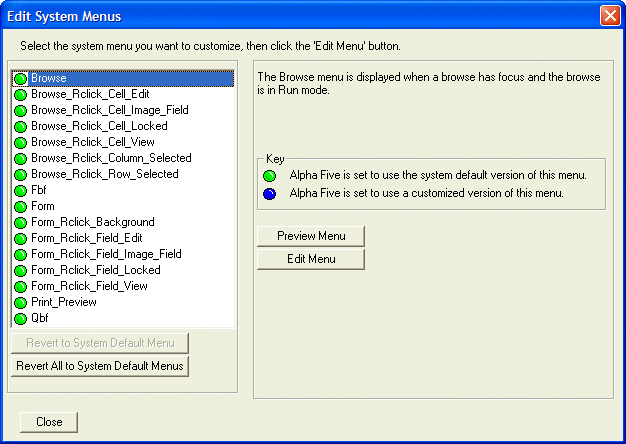

Editing System Menus
You can customize several system menus in Alpha Five. Customizing a system menu is different than defining a custom menu for a form or browse. When you define a custom menu for a form or a browse, just that form or browse uses the customized menu. However, when you customize a system menu, then all forms and browses (including those for which custom menus have not been defined) will use the customized system menu in place of the built-in system menus.
To customize the default system menu:
Open the database Control Panel and display the Code tab.
Right-click in the white space (with no icons selected) in the Code tab window, and select Customize System Menus/Toolbars > Customize System Menus. The Edit System Menus dialog appears.

Select the System Menu that you want to customize, and then click the Edit Menu button. The Menu Maker appears.
See Also
Menu Capabilities, How to Design a Custom Menu